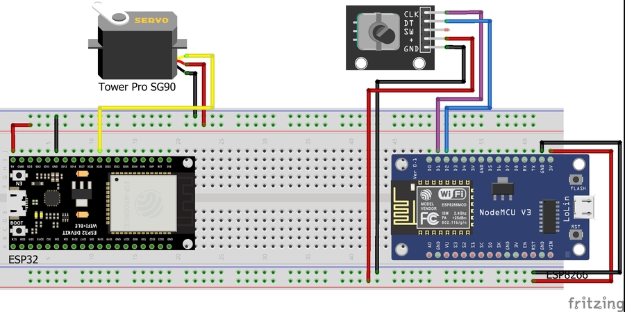

Week 9: Wireless connection
Wireless Servo control using ESP-NOW
Wireless Servo control using ESP32 and ESP8266
Wireless Servo control using ESP-NOW ESP32 and ESP8266
Idea
I hope you enjoyed my previous project in Week 7, because this project is based on it. For the semestral project called Robotic arm control inteface I would like to transfer an Encoder position to the position of Servo, and of course it would be cool and convenient to do it wirelessly!
I came across a short video about the ESP-NOW protocol, I got interested and found out that it was a great way to connect two ESP boards. It should maintain a stable connection up to 200 meters in the open and be able to continue working even if any of them is reset.
I was a happy owner of ESP8266, which had been lying in a dusty drawer for a long time, and since I got the ESP32 in the kit, I had hope of implementing my idea. I found out that you can connect ESP32 and ESP8266 to communicate through ESP-NOW.
Scheme and initialization
I used these components in my project:
Please note that this list provides only general information about the components and may not correspond to the components used in this project. You will need to adjust your code/connection due to the specification of your components.
Here is the circuit designed in Fritzing:

and how it looks in the real life:

Code
Note: I was able to find the right “Board” for a ESP8266 in the PlatformIO only on the third try. Choose your bard carefully and check whether everything works.
Before we can start to write a code for our project, we will need to find MAC adresses of our devices. Here is the code you should run on both ESP32 and ESP8266:
#ifdef ESP32
#include <WiFi.h>
#else
#include <ESP8266WiFi.h>
#endif
void setup(){
Serial.begin(115200);
Serial.println();
Serial.print("ESP Board MAC Address: ");
Serial.println(WiFi.macAddress());
pinMode(LED_BUILTIN, OUTPUT);
}
void loop(){
}
Code was provided by RandomNerdTutorials.
If you don’t see anything in your Serial monitor, try to add this in your loop():
void loop(){
digitalWrite(LED_BUILTIN, HIGH);
Serial.println();
Serial.print("ESP Board MAC Address: ");
Serial.println(WiFi.macAddress());
delay(500);
digitalWrite(LED_BUILTIN, LOW);
delay(500);
}
Note: Every device must have its own unique MAC adress! If it’s not your case, try to find the solution on the Internet.
Now, let’s write main part of code. I used the template provided by Arduino and changed it for my purposes, you will find the template on this link.
Code for a sender(ESP8266) with an Encoder connected:
#include <ESP8266WiFi.h>
#include <espnow.h>
// Rotary Encoder Inputs
#define inputCLK 5 // D1
#define inputDT 4 // D2
// RECEIVER MAC address
uint8_t broadcastAddress[] = {0xB8, 0xD6, 0x1A, 0x5B, 0xCC, 0xC8};
// Must match the receiver structure
typedef struct struct_message {
char a[32];
int currentStateCLK;
int previousStateCLK;
int currentStateDT;
int counter;
} struct_message;
struct_message myData;
// Callback when data is sent
void OnDataSent(uint8_t *mac_addr, uint8_t sendStatus) {
Serial.print("\r\nLast Packet Send Status:\t");
Serial.println(sendStatus == 0 ? "Delivery Success" : "Delivery Fail");
}
void setup() {
// Init Serial Monitor
Serial.begin(115200);
// Set device as a Wi-Fi Station
WiFi.mode(WIFI_STA);
// Init ESP-NOW
if (esp_now_init() != 0) {
Serial.println("Error initializing ESP-NOW");
return;
}
// Register for Send Callback to get the status of Transmitted packet
esp_now_set_self_role(ESP_NOW_ROLE_CONTROLLER);
esp_now_register_send_cb(OnDataSent);
// Register peer
esp_now_add_peer(broadcastAddress, ESP_NOW_ROLE_SLAVE, 1, NULL, 0);
pinMode(inputCLK, INPUT);
pinMode(inputDT, INPUT);
myData.previousStateCLK = digitalRead(inputCLK);
myData.counter = 0;
}
void loop() {
// check whether anything was sent successfully
strcpy(myData.a, "THIS IS A CHAR");
myData.currentStateCLK = digitalRead(inputCLK);
if (myData.currentStateCLK != myData.previousStateCLK){
// Encoder is rotating counterclockwise
if (digitalRead(inputDT) != myData.currentStateCLK) {
myData.counter -= 2;
if (myData.counter <= 0){
myData.counter = 0;
}
} else {
// Encoder is rotating clockwise
myData.counter += 2;
if (myData.counter >= 180){
myData.counter = 180;
}
}
Serial.print("Counter: ");
Serial.println(myData.counter);
// Send message via ESP-NOW
uint8_t result = esp_now_send(broadcastAddress, (uint8_t *)&myData, sizeof(myData));
if (result == 0) {
Serial.println("Sent with success");
}
else {
Serial.println("Error sending the data");
}
}
myData.previousStateCLK = myData.currentStateCLK;
delay(1);
}
Code for a receiver(ESP32) with a Servo connected:
#include <Arduino.h>
#include <esp_now.h>
#include <WiFi.h>
#include <ESP32Servo.h>
// Must match the sender structure
typedef struct struct_message {
char a[32];
int currentStateCLK;
int previousStateCLK;
int currentStateDT;
int counter;
} struct_message;
// Create a struct_message called myData
struct_message myData;
Servo myservo;
// callback function that will be executed when data is received
void OnDataRecv(const uint8_t * mac, const uint8_t *incomingData, int len) {
memcpy(&myData, incomingData, sizeof(myData));
Serial.print("currentStateCLK: ");
Serial.println(myData.currentStateCLK);
Serial.print("previousStateCLK: ");
Serial.println(myData.previousStateCLK);
Serial.print("currentStateDT: ");
Serial.println(myData.currentStateDT);
Serial.print("Counter: ");
Serial.println(myData.counter);
Serial.println();
}
void setup() {
Serial.begin(115200);
WiFi.mode(WIFI_STA);
if (esp_now_init() != ESP_OK) {
Serial.println("Error initializing ESP-NOW");
return;
}
// Register for recv CB to get recv packer info
esp_now_register_recv_cb(OnDataRecv);
myservo.attach(25);
}
void loop() {
myservo.write(myData.counter);
delay(1);
}
Note that I used different ESP-NOW libraries for a ESP8266 and ESP32. Note how stupid it is: the ESP-NOW library for a ESP32 is called esp_now.h, while the name of ESP-NOW library for a ESP8266 is espnow.h. And not only the names are different, but also the functions, which complicated the assignment a lot and required further troubleshooting. Nevertheless, the code I provided works fine. You just need to load it on the specified board.
The functions provided in Arduino template correspond to the functions used in esp_now.h.
Final result
Both ESP must be connected to the power source and you are ready to go.
The delay of ESP-NOW is much smaller than I expected, I would say negligible or the same as with wired communication (at least at short distances). It is a good sign and the reason why its usage would be very beneficial in my Robotic arm control inteface